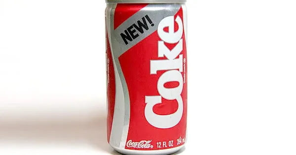
Coca-Cola / 1985
New Coke
Ordinary drinkers, a few weeks in. Listen to how personal it sounds.
The campaign archive / Edition 05 / Failure first

“Nobody enters an award with the campaign they pulled. That’s exactly why these are worth studying.”
Edition 04 ended with an ad pulled after three days. This edition is about campaigns that went wrong, from a soft drink in 1985 to a restaurant logo in 2025. For each I ask two questions. What was the mistake, and what did the brand do next?
15 case studies / 1985 to 2025
Opening story / Coca-Cola / 1985
In April 1985 Coca-Cola replaced its formula because research said people preferred a sweeter taste. Seventy-nine days later the original was back.
01 / The finding
None of the fifteen has a modelled effect, the first edition in the series with none. Five can point to sales, a share price or market value moving. Tropicana lost a fifth of its unit sales in seven weeks, and Peloton lost $942m of market value in a day. The rest are recorded in days. Gap took back its logo in six, and Pepsi pulled its film in one.
The reversals tell the clearest story. Five brands changed something people felt they owned, a formula, a carton, a logo or a name, and all five changed it back, four of them within three months. The two that recovered did the opposite of hiding. They said plainly what went wrong and showed what they had fixed. Across the series, modelled effects number 1 in Edition 01, 13 in Edition 02, 6 in Edition 03, 2 in Edition 04, none here, none in Edition 06 and 3 in Edition 07.
Failures are rarely written up. No brand enters an effectiveness award with the campaign it pulled, so this edition leans on company statements, market data and press records more than any other.
Modelled effectSales or market trendReach only or archival
02 / The patterns
Instead of the series’ usual mechanisms, this edition sorts each case by the mistake behind it. Ignoring attachment leads: the most common failure is changing something people already love. Choose one to filter the archive.
People owned the old version more than the brand realised.
The brand gave people a reason to doubt what they were buying.
The offer was worth more than the business could pay.
The brand used a cause it hadn’t earned, or wouldn’t stand behind.
The joke or the message read differently to the people who saw it.
The brand said plainly what went wrong and showed it had changed.
03 / The screening room
One film from a brand channel and three from news channels. Watch how quickly the story moves from the brand to the public.

Coca-Cola / 1985
Ordinary drinkers, a few weeks in. Listen to how personal it sounds.
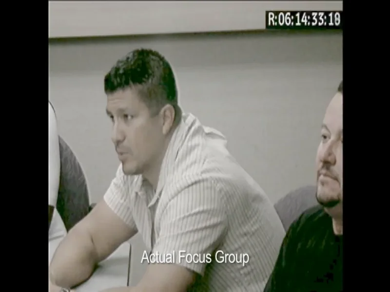
Domino’s / 2009
Watch the faces of the people reading the reviews.
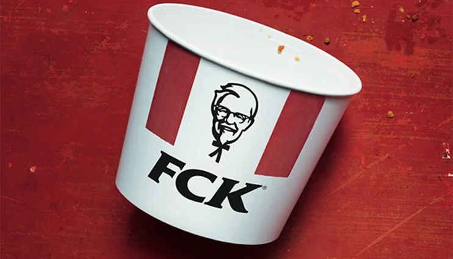
KFC / 2018
The news on the day. The apology that turned it around came days later, in print.
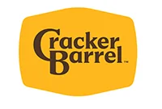
Cracker Barrel / 2025
A local news report as the backlash grew. Notice who is defending the old logo.
04 / The collection
See each failure alongside what the brand did next. Open each case for the film, image credit, my take and how the damage was recorded.
Modelled effectSales trendSurveyReach only or archival
15 campaigns
Coca-Cola, 1985
On 23 April 1985 Coca-Cola replaced its formula with a new one, launched simply as the new Coke.
Research can tell you what people prefer in a sip. It can’t tell you what they feel they own.
Read this next to the Pepsi Challenge in Edition 03. One sip of data pushed the biggest brand in the world into its biggest mistake.
Pepsi had spent a decade running blind taste tests and gaining ground. Coca-Cola’s own research said a sweeter formula would beat both.
People didn’t want a better taste. They wanted their Coke back. By June the consumer hotline was taking about 1,500 calls a day, and in July the company brought back the original as Coca-Cola Classic.
It is the rare failure that became a love letter. The anger proved how much the old brand meant.
Coca-Cola’s own history records the calls and the reversal. The company’s figures are self-reported, and no public source isolates the commercial cost.
There is no effectiveness record. The evidence is the company’s account of calls, letters and the reversal.
Ratners, 1991
At the Institute of Directors in April 1991, he joked that one product was ‘total crap’ and that a prawn sandwich would outlast some of his earrings.
People don’t only buy the product. They buy what it says about them.
Ten seconds of honesty in the wrong room. It’s the clearest proof I know that a brand lives in the customer’s head, not the boardroom.
Image: Gerald Ratner at the 1991 Annual Convention · Institute of Directors archive
Gerald Ratner ran Britain’s biggest jewellery chain, built on cheap prices and a lot of shops.
Customers heard what he thought of them. The group’s value fell by around £500m, Ratner left, and the business was later renamed Signet.
It gave the language a phrase. ‘Doing a Ratner’ still means talking down your own business.
The fall in value is well documented, but the figure is approximate and the recession was hurting retailers at the same time.
The record is the company’s market value and what happened to the business afterwards.
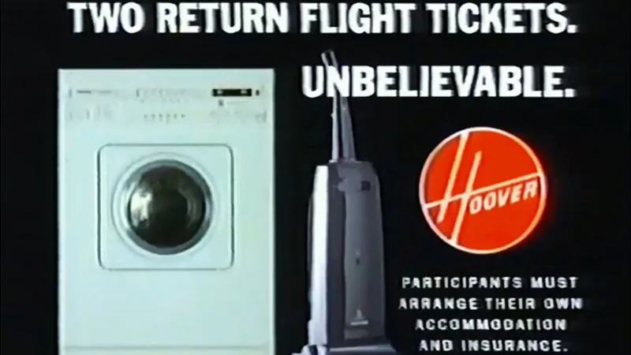
Hoover / 1992 / OverpromisingFree FlightsBuy a vacuum cleaner, fly to America.Paid the price · The promotion ran away with the brand £48mEstimated cost of the promotionHoover UK, 1992
In 1992 it offered two free return flights with any purchase over £100. Later that year the offer was extended to flights to the United States, worth far more than the machines.
An offer can’t be worth more than the thing it sells.
The most British failure in the edition. Everyone involved could do the sums, and nobody did.
Image: Hoover, Two Return Flights (1992) · still from The Laundry Lab archive upload
Hoover’s UK business had warehouses of stock to clear.
Far more people applied than Hoover had planned for. The flights cost far more than the sales earned, the complaints went on for years, and Hoover’s European business was later sold.
People bought vacuum cleaners they didn’t want to get a holiday they did.
The cost figures vary between sources, but all agree the promotion lost Hoover tens of millions of pounds and led to years of complaints.
The record is the reported cost, the complaints and what happened to the business.
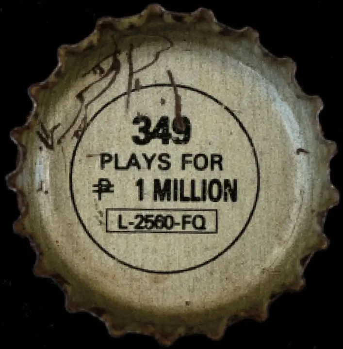
Pepsi / 1992 / OverpromisingNumber FeverOne number, printed on far too many caps.Paid the price · Lawsuits and settlements $8.9mPaid to 486,170 claimants, per WikipediaPepsi Philippines, 1992
Number Fever promised cash prizes for caps printed with the winning number. When 349 was announced, huge numbers of people held a cap that seemed to win.
When a promise goes wrong at scale, the cost isn’t only money.
The hardest case to include, and I nearly left it out. Marketing failures are usually embarrassing. This one cost lives.
Pepsi was well behind Coca-Cola in the Philippines and ran a bottle-cap contest to catch up.
Pepsi said most of those caps weren’t valid. Protests followed, some violent, and at least five people died. The lawsuits ran for years.
A three-digit number became shorthand for a corporate disaster.
The promotion is well recorded, but the figures for claims, payments and lawsuits vary between sources.
The record is the reported payments, lawsuits and the events that followed.
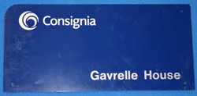
Royal Mail / 2001 / Ignoring attachmentConsigniaThe Post Office Group gave itself a new name. Nobody used it.Reversed · The old name came back 16 monthsFrom launch to the reversal announcement · legacy factThe Post Office Group, 2001
In 2001 it renamed the group Consignia, keeping Royal Mail and Post Office as the brands people saw.
A name people already trust is an asset. Don’t trade it for one they have to learn.
Every agency has a Consignia story. This is the one we all learned from.
Image: Consignia sign from Gavrelle House · British Postal Museum and Archive collection
The Post Office Group was becoming a public limited company and wanted a name that sounded modern and international.
The name was widely mocked and never caught on. In 2002, with the business losing money, the company announced it would become Royal Mail again.
It is a word that sounds like a brand and means almost nothing.
Trade press records the name, the losses and the reversal. Reports put the cost of changing back at about £1m.
The record is press coverage of the change and its reversal.
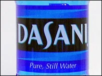
Dasani / 2004 / Undermining the productThe UK LaunchBottled tap water, then a recall.Withdrawn · Recalled and pulled from the UK 500,000Bottles recalledCoca-Cola, 2004
The launch called Dasani pure. The press soon reported that it was treated mains water from Sidcup, and British viewers remembered a sitcom joke about bottled tap water.
If the story depends on purity, the product has to be beyond question.
Two problems at once. People might have forgiven the tap water, or the recall. Not both in five weeks.
Coca-Cola had built Dasani into a major bottled water brand in the United States and brought it to Britain in 2004.
Weeks later, tests found bromate above the legal limit in a batch. Coca-Cola recalled about 500,000 bottles and withdrew the brand from Britain.
It became the punchline the sitcom had already written.
The recall and withdrawal are well recorded. The launch failure combined a credibility problem with a quality one, and the record doesn’t separate the two.
The record is the recall, the withdrawal and press coverage.
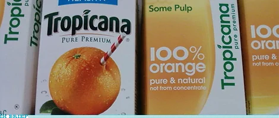
Tropicana / 2009 / Ignoring attachmentThe New CartonThe orange with a straw disappeared, and so did the sales.Reversed · The old carton came back -20%Unit sales, in about seven weeksPepsiCo, 2009 · Arnell
In January 2009 Arnell redesigned the carton with a glass of juice and a cleaner look, as part of a wider campaign.
On a shelf, recognition is the product. Change the cues and you change what people think they’re buying.
The failure I quote most in meetings, because it has a number. A carton is a signpost before it is a design.
Image: Tropicana, original and redesigned cartons (2009) · Brand New / UnderConsideration
Tropicana Pure Premium was a market leader, recognised on the shelf by an orange with a straw in it.
Shoppers couldn’t find their juice or thought it looked like an own label. Within two months PepsiCo announced the old carton would return.
Everyone remembers the orange with the straw, which is exactly the point.
The sales fall is widely reported from retail data. It covers only seven weeks, and other factors weren’t separated out, so it is a trend rather than a modelled effect.
Retail sales data tracked units before and after the change.
Crispin Porter + Bogusky for Domino’s
Crispin Porter + Bogusky made a campaign that showed real focus groups criticising the pizza, then showed the company rebuilding the recipe.
The fastest way back is to say what went wrong and show you fixed it.
The bravest brief in the edition. The failure was the pizza, and the brand fixed that before it made the ad.
Image: Domino’s and Crispin Porter + Bogusky, Pizza Turnaround · case-film still from D&AD
Domino’s had flat sales and a reputation for pizza that tasted like cardboard. It closed more than 100 US stores in 2009.
Admitting the problem made the new pizza believable.
Seeing a chief executive watch customers call his pizza cardboard is still uncomfortable, and that’s why it works.
Domino’s reported 14.3% same-store sales growth and credited the new pizza. That is a business trend. The recipe, the campaign and the price offers all changed together.
The company’s quarterly earnings reported sales after the relaunch.
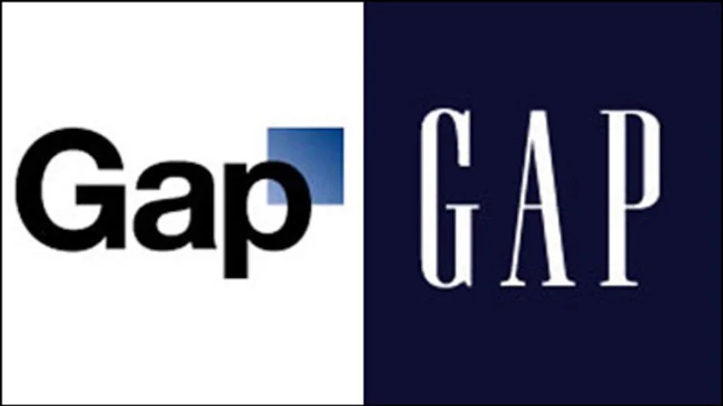
Gap / 2010 / Ignoring attachmentThe New LogoA logo that lasted less than a week.Reversed · The blue box came back 6 daysBefore Gap brought back the old logo · legacy factGap, 2010
In October 2010 Gap introduced a new logo, Helvetica with a small blue square, then invited the public to suggest alternatives.
Social media gives people a vote, whether or not you asked for one.
The first rebrand to be marked live on social media. Asking for ideas after the backlash made it look worse.
Gap’s blue box logo had been part of the brand for decades.
The response online was fierce and fast. Six days later Gap said it would return to the blue box.
A parody account for the new logo became more famous than the logo.
The reversal is well recorded. No public source shows an effect on sales.
The record is press coverage of the launch and the reversal.
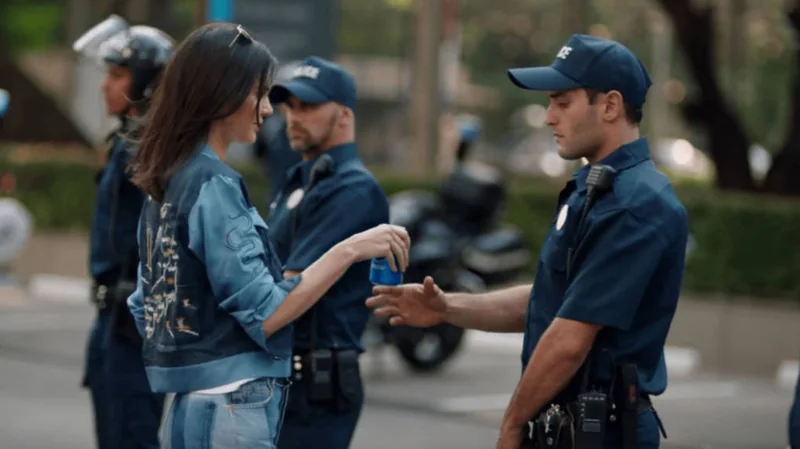
Pepsi / 2017 / Borrowing a causeLive for NowA protest ended with a can of soda.Withdrawn · Pulled within a day 1 dayOnline before it was pulled · legacy factPepsi, 2017
In the film, Kendall Jenner leaves a photo shoot, joins a protest and hands a police officer a Pepsi.
If a brand borrows a cause, people will ask what it has ever done for it.
The ad every brief about purpose should have to watch first. Nobody in the film had anything at stake.
Image: Pepsi, Live for Now (2017) · film still reproduced by KQED
Pepsi wanted a film about unity at a time of real protest in the United States.
Critics said it trivialised protest movements. Pepsi first defended the film, then pulled it and apologised to Jenner.
The scene with the can became a meme within hours.
The withdrawal and apology are in Pepsi’s own statement. No public figure shows an effect on sales.
There is no effectiveness record. The evidence is the reaction and Pepsi’s statement.
Mother London for KFC
Mother London rearranged the logo on an empty bucket to read FCK and ran it as a full-page apology in national newspapers.
An apology works when it sounds like the brand and doesn’t dodge the problem.
My favourite apology ever written. It said sorry without grovelling, and it never pretended the problem was small.
Image: KFC and Mother London, FCK (2018) · print artwork reproduced by It’s Nice That
In February 2018 KFC switched delivery companies, chicken didn’t arrive, and hundreds of UK restaurants closed.
The apology became the story. Coverage moved from the closures to the ad.
It is rude, funny and completely honest, which is hard to manage in one word.
The figures come from the agency’s award entry and are self-reported reach. No public source shows the effect on sales or reputation.
The record counts coverage and social reach.
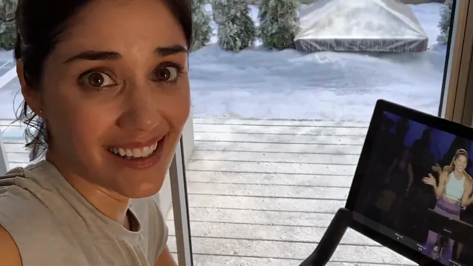
Peloton / 2019 / Misjudging the roomThe Gift That Gives BackA Christmas present that people read as an insult.Paid the price · A fall in market value $942mMarket value lost in a dayPeloton, 2019
In the ad, a woman records a year of workouts after her husband gives her a Peloton.
People don’t judge an ad by what you meant. They judge it by what they see.
The case with the best ending. A rival turned the failure into its own ad within days. That’s what happens when you leave a gap.
Image: Peloton, The Gift That Gives Back (2019) · still from the original television spot
Peloton was growing fast and wanted a Christmas ad about the bike as a gift.
Many viewers read it as a husband pushing his wife to lose weight. Peloton said the ad had been misinterpreted. Ryan Reynolds then cast the same actress in an ad for his gin.
Her face. Viewers saw nerves where the brand meant joy.
Peloton’s shares fell more than 9% that day. The wider market was also down, so the figure is a trend, not a measure of the ad’s effect.
The record is the share price and the public reaction.
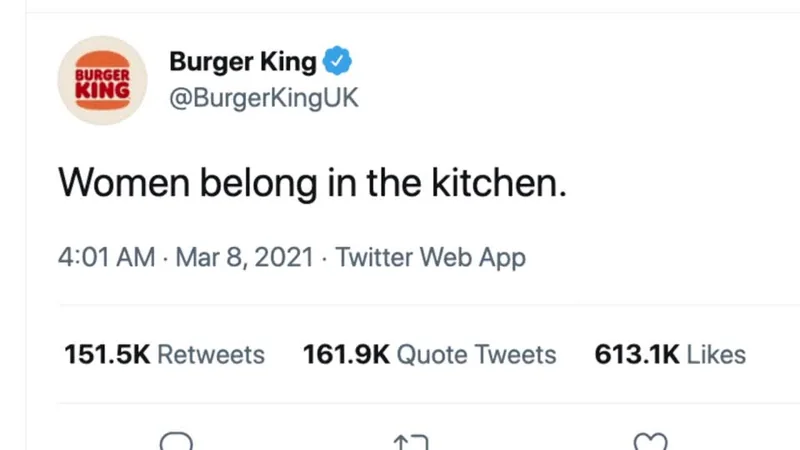
Burger King UK / 2021 / Misjudging the roomWomen Belong in the KitchenA good cause behind a terrible first line.Withdrawn · Tweet deleted, apology posted 1 dayBefore the tweet was deleted · legacy factBurger King UK, 2021
Its UK account tweeted ‘Women belong in the kitchen’, with the explanation in the replies. The same line ran in a newspaper ad.
On social, the first line is the whole ad. Nobody reads the thread.
Clever in a meeting, wrong in a feed. The scholarship was worth talking about, and the joke buried it.
Burger King was launching a scholarship to help women train as chefs, for International Women’s Day.
Most people saw only the first line. After a day of backlash the tweet was deleted and the brand said, ‘We got our initial tweet wrong and we’re sorry.’
It is a provocation that only worked for people who read to the end.
The deletion and apology are recorded in coverage and in the brand’s own posts. No public figure shows an effect.
There is no effectiveness record. The evidence is the reaction and the apology.
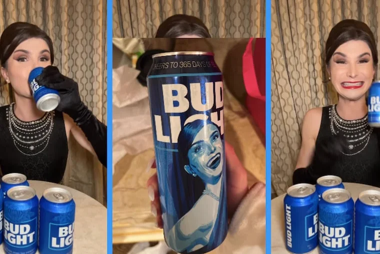
Bud Light / 2023 / Borrowing a causeThe BoycottOne social post, and America’s best-selling beer lost the top spot.Paid the price · Lost its place as the top beer -24.6%Retail sales, four weeks to 3 JuneAnheuser-Busch, 2023
In April 2023 the brand sent transgender influencer Dylan Mulvaney a personalised can for a sponsored post.
If you take a stand, stand by it. Backing away loses both sides.
The partnership wasn’t the failure. The silence afterwards was. A brand that won’t say what it believes leaves everyone else to say it.
Bud Light had long been the best-selling beer in the United States.
A boycott followed. The company’s response pleased neither critics nor supporters, and by June Modelo Especial had overtaken Bud Light in US retail sales.
It shows how quickly a single post can become a national argument.
Retail data shows a steep fall and the loss of first place. Light beers were already declining, so the boycott isn’t the only cause.
Retail sales data tracked weekly sales against the year before.
Cracker Barrel, 2025
In August 2025 it unveiled a simpler text logo as part of a wider refresh of the brand and its restaurants.
When nostalgia is the product, modernising the logo looks like selling the past.
Gap all over again, fifteen years later. Brands keep learning this one the hard way.
Image: Cracker Barrel, August 2025 logo · Heidi Pearce / brand press kit on MultiVu
Cracker Barrel’s logo showed an old man leaning on a barrel, and its restaurants were full of country nostalgia.
The backlash was huge and political. About a week later the company said it would keep the old logo.
People defended a cartoon of a man on a barrel as if he were family.
The reversal is well recorded. Reports of the share price moves vary, and sales were already declining before the change, so no figure isolates the effect.
The record is the reversal and press coverage.
No campaigns match. Try clearing the search or setting a filter back to All.
05 / The evidence
A reversal is the fastest evidence there is. It shows the brand believed the damage was real. It rarely shows what the damage cost.
Pulling an ad ends the story early, so there is rarely a number. The record is the company’s statement and the public reaction.
Sales, share prices or settlements moved. They show something went wrong, not how much the campaign caused it, because markets and categories move too.
The recoveries offer a sales trend and earned media. Domino’s also changed the pizza, so the campaign can’t take all the credit, and shouldn’t.
Every case gets one of five ratings, strongest first: modelled effect, sales trend, survey, reach only and archival. Here a fall in share price or market value counts as a trend. A fact such as how many days a logo lasted is marked so it isn’t read as a result.
Each case changed how people saw a brand for the worse, at least for a while, and has a public record. Films come from brand or news channels, and where none exists the case says so.
06 / Out now / Edition 06